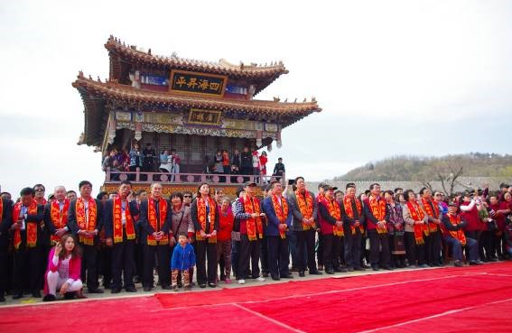
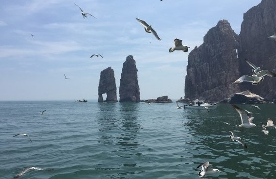

长岛文化更多+


渔号岛屿
妈祖祭典
渔号新闻更多+
- 山东长岛保护“绿水青山” 扮美...... 2017-12-18
- 山东长岛县海域发生3.7级地震...... 2017-03-27
- 中国首个渔业多功能平台在山东...... 2017-05-11
- 专家齐聚山东长岛 支招海岛生...... 2017-06-12
- 山东长岛县海域发生2.9级地震...... 2017-03-16
- 山东长岛海域发生3.9级地震 ...... 2017-03-03
- 常演常新，提升百姓“文化获...... 2018-01-12
渔家号子承载长岛渔民的坚毅性格
渔号一旦叫起，它能令“多心眼”想到一起，令“八股绳”拧到一块，在险情当头时间紧迫和重负荷压顶的情况下产生以一顶十的降龙伏虎之威。“我们就是冲着长岛渔号子来旅游的！”游客这股心劲是缘于渔号子赋予长岛的一种特殊吸引力。喊渔号、唱旅游，在长岛人的生活里无时不在，无处不有，是一个时尚，还派生出了专为游客唱渔号的“渔爸爸” “渔妈妈”演出队。
正因为长岛人嗜好喊渔号到了无以复加的地步，所以长岛渔号在旅游市场就产生了一种令人难以想象的神奇力量 ，成为招引客源的一大“吸盘”，每年有北京、河北、河南等40多个大中城市的近百万游客涌进长岛。